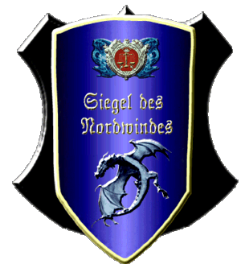

|

|
Das schwarze Brett
|
|
| Übersicht,
Alltägliches und Lokales (RPG) |
|
Urvantempel und Schulen in Schnurriburg
|
Chihiro Takeshi
 |
*Eine Heilerin eilt auf den öffentlichen Platz und sucht die Tafel, auf der die Tempel und Schulen verzeichnet werden. Da sie nicht so schnell fündig wird, hängt sie kurzerhand eine eigene Tafel aus, auf der folgendes steht:*
Guten Tag liebe Scherbenbürger,
ich finde aktuell keine passende Tafel, an der ich Schulen und Tempel verzeichnen kann. So möchte ich hiermit bekanntgeben, dass die Koboldstadt Schnurriburg auf der Lagerinsel, westlich von Wichtelsweiler und nahe des Gaiatempels, nun einen Urvantempel und eine Magierakademie, eine Handwerkerschule sowie eine Kampfschule beherbergt.
Besucher und Pilgerer sind stets herzlich willkommen!
Es grüßt herzlich
Duana, Heilerin im Dienste von Chihiro Takeshi
Kardinälin Chihiro Takeshi,
Vorsteherin von Schnurriburg,
Kardinälin im Dienste des einzig wahren Glaubens an Urvan,
Arthwrfutta,
Ehefrau des ehrenwerten Arthwr Dyddplentyn
Zur 21. Stunde am 40.Blumenmond im Jahre 459 |
09.05.14 13:04
 |
|
Harry Wurstbrot
 |
Ich wollte neulich nach Schnurriburg, aber es gibt auf der Lagerinsel keine Route, lediglich über Oneiros konnte ich reisen, doch das war mir etwas zu weit.
Eventuell könntet Ihr eine Route von Lager West aus einrichten, da ich für die Orks an der Sperre noch nicht stark genug bin?
Harry Wurstbrot
Zur 4. Stunde am 49.Blumenmond im Jahre 459 |
11.05.14 11:35
|
|
Arthwr Dyddplentyn
 |
Das Irrtum Harry:
wenn du nix will gege Ork Kampf,dann man kann reise von Wichtelweila hinaus un zuruck...Schnurriburg garnix Route aba Wichtelstadt un Horkstein schon un gaanz nahe!
Kardinal Arthwr Dyddplentyn,
Vorsteher von Burg Horkstein,
Kardinal im Dienste des einzig wahren Glaubens an Urvan,
Ehemann der reizenden Chihiro Takeshi,
Kuchemampf- un Birtrinkgroßmeista
Zur 5. Stunde am 49.Blumenmond im Jahre 459 |
11.05.14 11:57
|
|
Harry Wurstbrot
|
Aber ich finde keine Route nach Wichtelweiler. Weder von Lager West, Kuslik, Turris Fengaris oder Klein Waifs.
Vielleicht könnt Ihr mir helfen?
Harry Wurstbrot
Zur 18. Stunde am 49.Blumenmond im Jahre 459 |
11.05.14 14:46
|
|
Arthwr Dyddplentyn
|
Hmmm,dann große grune Hork musse kleine grune Wichtel wachprugel damit Karte neu male un alle Route eintrag!
Gaanz sicha es gebe Route von Klein Waif nach Wichtelweila un zuruck,i schwor bei Urvan!
Kardinal Arthwr Dyddplentyn,
Vorsteher von Burg Horkstein,
Kardinal im Dienste des einzig wahren Glaubens an Urvan,
Ehemann der reizenden Chihiro Takeshi,
Kuchemampf- un Birtrinkgroßmeista
Zur 16. Stunde am 51.Blumenmond im Jahre 459 |
12.05.14 1:31
|
|
Icke wieder
 |
Wichtel verprügeln? Da bin ich dabei!
*grüßt beim Vorbeischlendern*
Fürst Ottor Waefre,
Vorsteher von Oneiros
Zur 4. Stunde am 53.Blumenmond im Jahre 459 |
12.05.14 10:04
|
|
David von Ressirp
 |
*fängt an zu Grübeln*
Markgraf David von Ressirp,
Vorsteher von Norimberg
Zur 15. Stunde am 33.Erntemond im Jahre 459 |
28.05.14 20:28
|
|
Übersicht,
Alltägliches und Lokales (RPG)
|
|
|
|
Dieser Beitrag
verwendet Regelvariante 3
 |
|
|